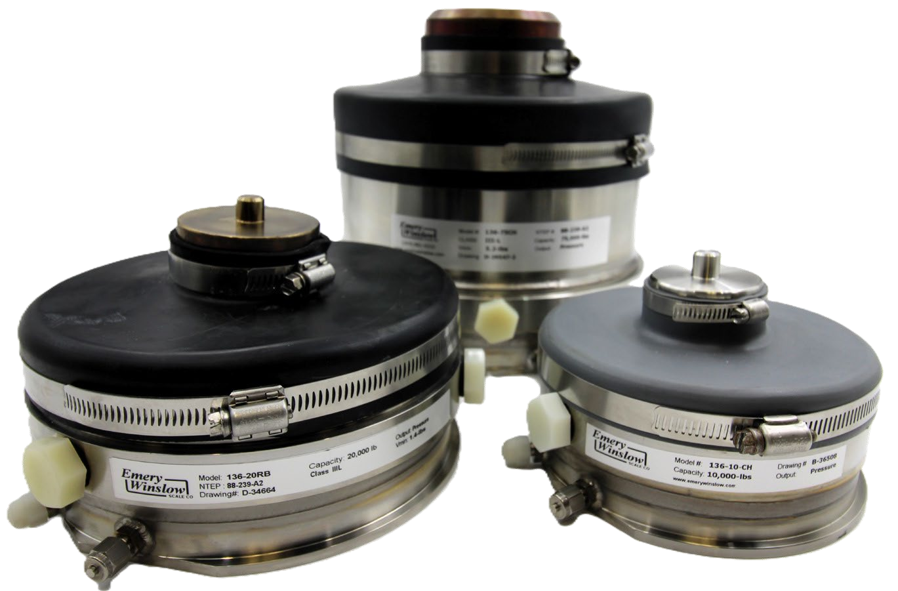
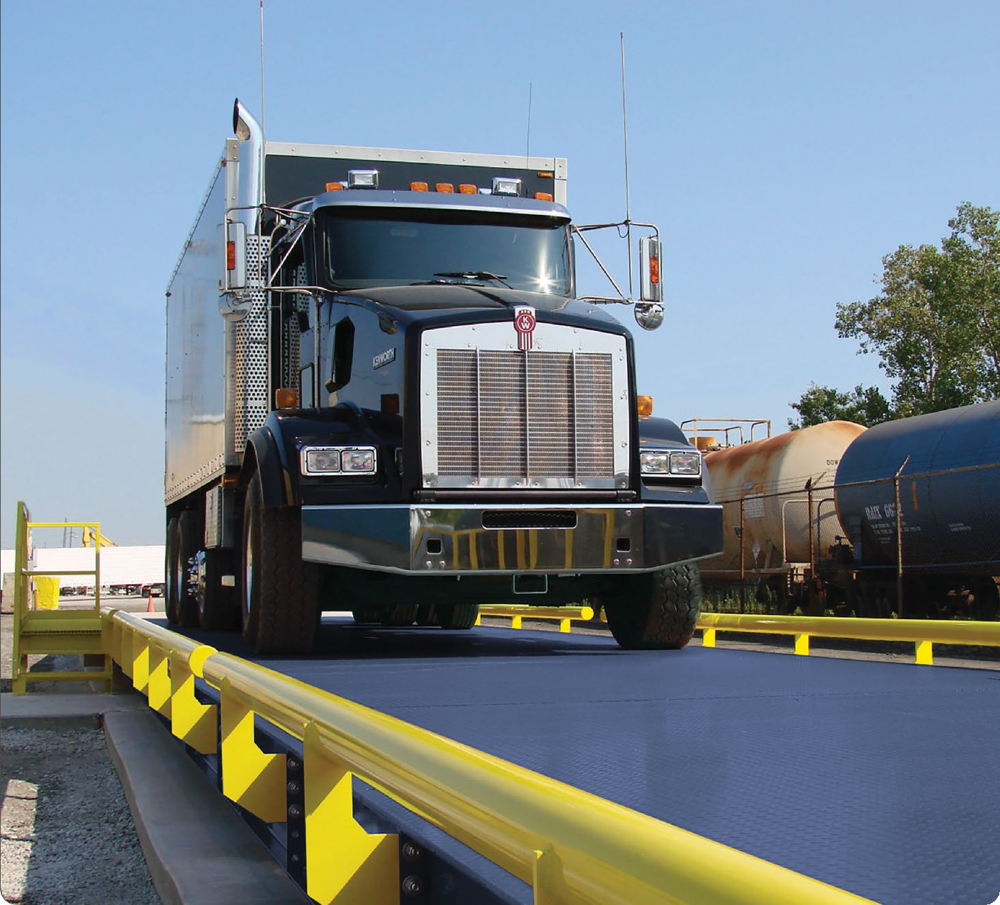
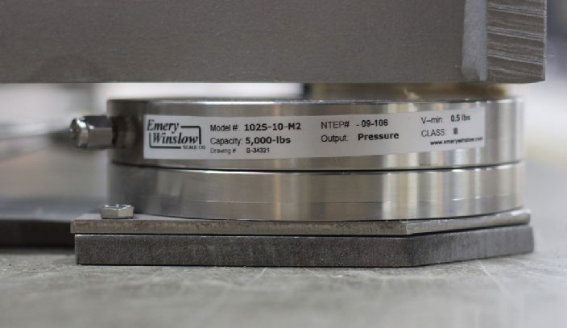
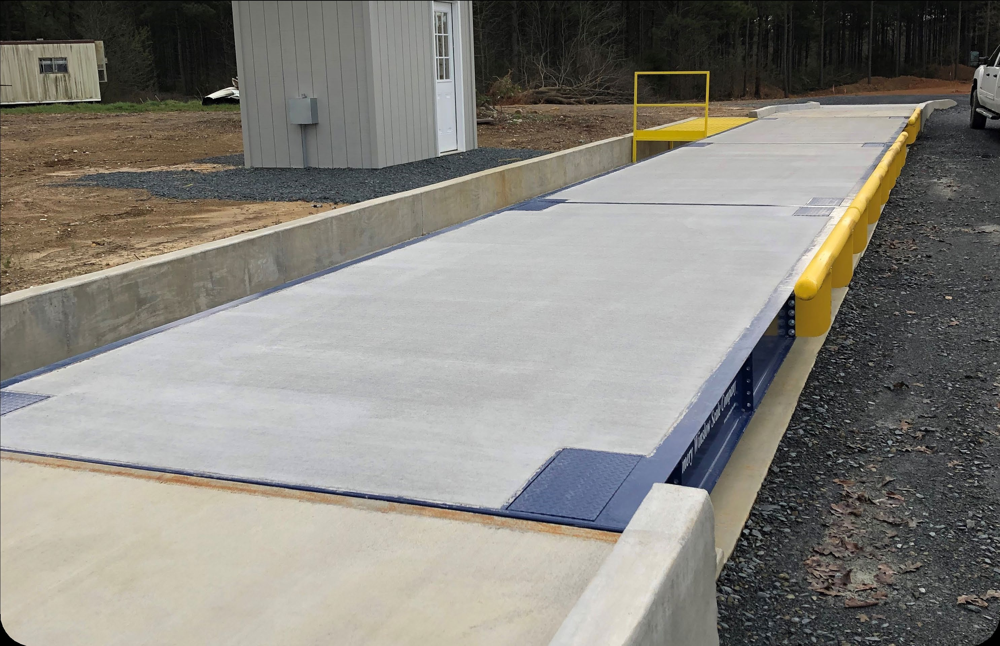
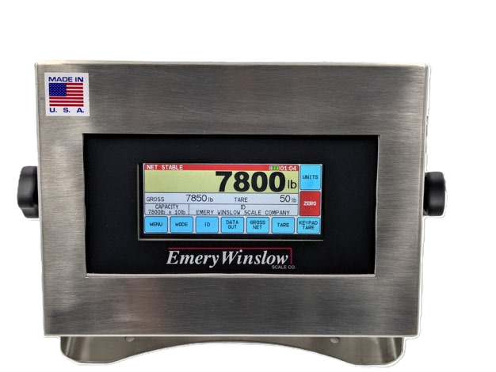

Emery Winslow Scale · 136 Series LifeMount
静圧式ロードセル
すべての Emery Winslow システムはこのセルから始まります。ステンレス製ピストンとダイヤフラムのユニットで、電子部品もジャンクションボックスもなく、計量点に電気的なものは何もありません。荷重は流体圧力となり、信号は配管を通って清潔で乾燥した室内の合算トータライザー（Summing Totalizer）へ送られます。
“Never Replace Your Load Cells Again!”（ロードセルを二度と交換しない！）
Emery Winslow Scale Company が自社の静圧式ロードセルに掲げる言葉です。

なぜ Emery Winslow なのか
静圧計量は数十年にわたり Emery Winslow の専門分野です。メーカー自身の言葉で、その特長は次のとおりです：
スケールに電子部品なし
静圧式ロードセルは重量を流体圧力に変換します。ステンレス配管がそれを清潔で乾燥したエリアの合算トータライザー（Summing Totalizer）へ運び、そこで初めて電子信号になります。
水、洗浄、落雷、サージに対応する設計
メーカーは、水、高圧洗浄、落雷、サージ、げっ歯類、RFI/EMI を、自社ロードセルが耐えるよう設計された故障要因として挙げています。
ステンレス構造
ステンレス製ロードセル（304、136 Series は 316 も選択可）と 316 ステンレス配管で、腐食性・衛生的なエリアに対応します。
安定した精度と、より長い耐用年数
Emery Winslow は、過酷な現場において電子式ロードセルよりも安定した精度と長い耐用年数を実現すると述べています。
長期的な運用コストの低減
メーカーによれば、緊急のサービスコールが減り、ダウンタイムが短縮され、ロードセルの交換も少なくなります。
米国製、1868 年にルーツ
1868 年創立の A.H. Emery Company にルーツを持ち、1974 年に Winslow（1896 年創立）と統合。コネチカット州シーモアの製造センターで製造されています。
強みは Emery Winslow Scale Company の記載によるものです：Hydrostatic Weighing Systems パンフレット（06-15-2026）、120 および 136 Series シート、ならびに emerywinslow.com/about.
静圧技術
すべての Emery Winslow Scale システムは静圧式ロードセルを使用します。荷重は流体圧力となり、電子部品はスケールから離れた清潔な室内に配置されます。

メーカーについて
Emery Winslow Scale Company は米国コネチカット州シーモアで静圧計量システムを製造しています。そのロードセルには電子部品が含まれていません。重量は流体圧力となり、ステンレス配管が清潔なエリアの合算トータライザー（Summing Totalizer）へ運び、そこで初めて重量表示器向けの電子信号に変換されます。
HearS はベトナムの産業顧客に Emery Winslow システムを提供し、当社チームによる選定、プロジェクトエンジニアリング、設置支援を行います。これらのページのソリューションは、Emery Winslow が HearS に注力を求めたものです。
タンク、ホッパー、容器スケール
136 Series LifeMount
大容量：5,000～1,000,000 lb のシステムで、タンク、サイロ、ホッパー、ミキサーに対応します。
シリーズを見る：136 Series LifeMount
120 Series LifeMount
小・中容量：1,500～18,000 lb のシステムで、攪拌される容器向けのセルフチェッキング式セルを備えます。
シリーズを見る：120 Series LifeMount
農場飼料サイロ、オフグリッド
静圧式ロードセルはサイロで電源を必要としないため、小型の太陽光キャビネットでシステム全体を稼働できます。これを核とした HearS のソリューションです。
詳細を見る：農場飼料サイロ、オフグリッド
トラック・軸重スケール



フロアスケール


電子式と静圧式ロードセルの比較（メーカー公表による）
| 重要な項目 | 電子式ロードセル | Emery Winslow 静圧式 |
|---|---|---|
| 水による損傷 | 脆弱 | スケールに損傷を受ける電子部品がない |
| 落雷 | 脆弱 | スケールに損傷を受ける電子部品がない |
| 洗浄（ウォッシュダウン） | 故障リスクが高い | そのために設計 |
| ダウンタイム | 頻繁 | まれ |
| メンテナンス | 継続的な費用 | 最小限 |
| 生涯コスト | 繰り返しの費用 | 総所有コストの低減 |
比較は Emery Winslow Scale Company が Hydrostatic Weighing Systems パンフレット（06-15-2026）で公表した内容によるものです。
ロードセル1台の故障コスト
Emery Winslow は電子スケールの隠れたコストを実例で示しています。年間4回のロードセル故障が発生する食鳥処理工場で、修理費 USD 2,500、1回あたり8時間のダウンタイム、生産への影響は1時間あたり USD 1,500 です。
つまり修理費 USD 10,000 にダウンタイム USD 48,000 を加え、年間 USD 58,000 です。これらの数字はメーカーの例示であり、HearS の実測ではありません。お客様ご自身の数字で同じ試算を行うこともできます。
- メーカーが挙げる業界：食肉、食鳥、水産、乳製品、食品加工
- 化学、溶剤、腐食性の洗浄環境
- 骨材、リサイクル、アスファルト、鉱業、鉄鋼
- 医薬品・衛生的な生産；24時間365日稼働

過酷な現場からの実証
Emery Winslow が公表した8件の事例で、毎晩洗浄される食肉工場から水中にあるロードセルまでを紹介します。
製品画像

画像：Emery Winslow Scale Company 
画像：Emery Winslow Scale Company 
画像：Emery Winslow Scale Company
業界別アプリケーション
出典：Emery Winslow Scale Company パンフレット（Hydrostatic Weighing Systems、06-15-2026；120 Series および 136 Series シート、02-16-2026 改訂）。メーカーの現行データシートが正式な情報です。
保証条件、納品、ベトナムでの使用に必要な承認は、各 HearS 見積で確認します。
資料とサポート
ダウンロード
Emery Winslow のデータシートと製品資料――136 および 120 Series ロードセル、RoadWeigh II、静圧アプリケーションガイド――は HearS がご要望に応じて提供します。
ダウンロードへ：ダウンロード
Emery Winslow システムについて相談する
何を計量したいのか、現在の現場がスケールにどのような影響を与えているかをお聞かせください。